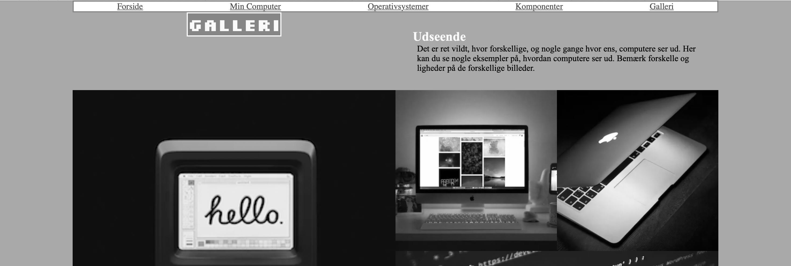

02.01.02 Website (Studiestartsprøven)
I “Tema 2” lærte jeg om grundlæggende web. Det gik især ud på at lære basal html og css kodning, som at sætte billeder ind ved hjælp af html eller at sætte et grid op. Derudover lærte jeg at lave hjemmesider responsivt, det ses i opgavens css med koden: “@media (min-width: 800px)”. Jeg skulle vise denne læring ved at følge et wireframe og følge det grid som blev vist, hjemmesiden skulle dog samtidig kunne fungerer på mobil. Jeg skulle også lave en menubar, dette blev gjort ved at indsætte en "nav" i headeren, og så oprette en "ul" i nav. Herudover skulle jeg sikre min HTML5 kodning var fejlfri, det gjorde jeg ved at bruge en validator.
